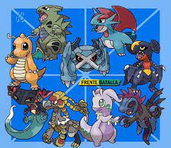

Pseudo-Legendario
Pseudo-legendario es un término utilizado por los fans para referise a un grupo de Pokémon no legendarios con estadísticas superiores a las de otros Pokémon comúnes, casi comparables a las de un Pokémon legendario. Este grupo está formado por Dragonite, Tyranitar, Salamence, Metagross, Garchomp, Hydreigon, Goodra, Kommo-o, Dragapult y Baxcalibur

Características:
Las Estadísticas Base de un Pokémon Pseudo-legendario sumadas dan un total de 600 (por si solos, sin Megaevolución) un número superior al de otras especies de Pokémon no legendarios. Hasta la fecha todos los Pseudo-legendarios son Pokémon de 3 fases evolutivas. Suelen ser de lento crecimiento y muy débiles en su primera fase evolutiva, llegando a evolucionar a niveles muy altos, lo cual hace difícil su entrenamiento.
Algunos son también Pokémon muy raros y difíciles de encontrar, por ejemplo: Dratini solo puede ser pescado en la Zona Safari (Kanto) y Larvitar habita en la Cueva Plateada (Jotho) pero con porcentajes bajos de aparición o pueden obtenerse como premios del Casino, Bagon aparece solamente en la zona más profunda de la Cascada Meteoro y Beldum solo puede ser obtenido como regalo al terminar la Liga (en Hoenn), y Gible aparece solamente en la zona secreta de la Cueva Extravio (en Sinnoh).